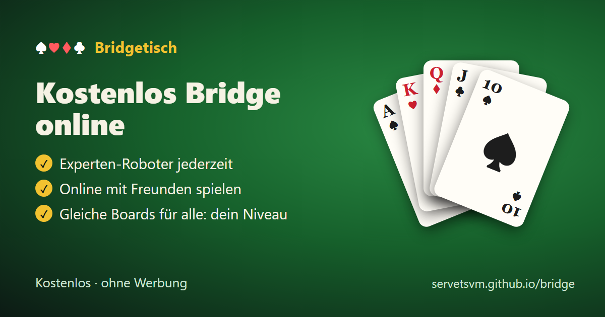

Kostenlos Bridge online

Spiele kostenlos Bridge online: gegen die Roboter oder mit Freunden, miss dein Bridge-Niveau, spiele in einer Meisterschaft, in der alle dieselben Boards spielen, übe Konventionen.
- Spiele jederzeit mit Experten-Robotern, ohne Anmeldung
- Öffne einen Tisch und spiele online mit Freunden
- Dieselben Boards für alle: sieh deinen Rang und dein Niveau
- Übe Konventionen: Stayman, Transfers, RKCB und mehr
- Teamkämpfe und Clubturniere mit IMP und MP
Kostenlos, ohne Werbung, auf Handy und Computer.